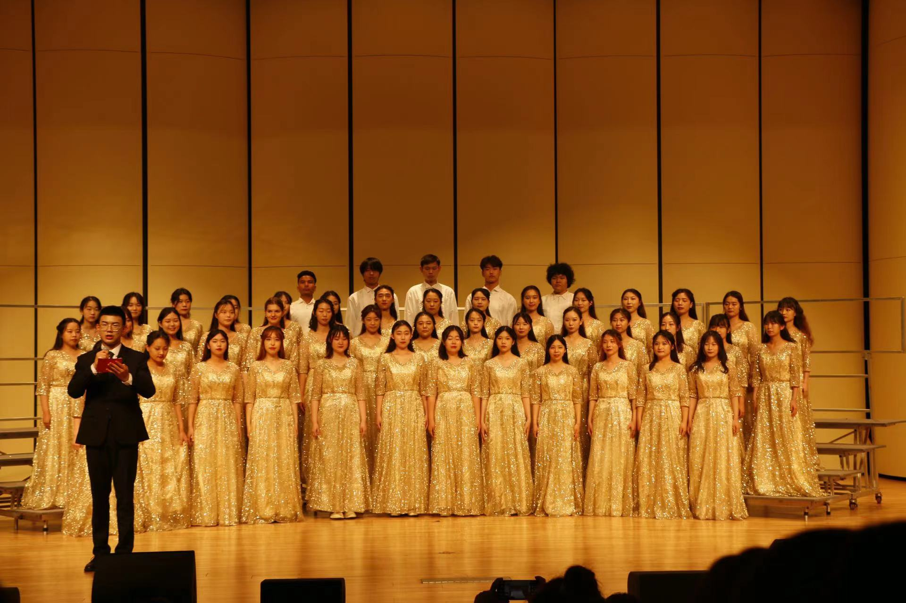

<DOCTYPE html>
</html>
    </head>
    <title>Christina的大二学年总结</title>
    <meta name="description" content="Christina"
    <meta name="description" content="大二"
    <meta name="author" content="xiao ji"
    </head>
    <body>
         <!--对自己大二的一个总结网页，毕业之后看一定很有意义！-->
         <h1 align="center">Christina第二年大学生活是这样度过的</h1>
         <p align="center">（脑海中第一个想法就是设计一个记录自己大学生活的网页，毕业之后再看一定超级有意义！）</p>
         <h2>一、社会实践</h2>
                <h3 align="center">1.公益未来·可持续“玛”上GO青年环保可持续创新项目 </h3>
                    <p align="center">这是<mark>第一个</mark>和朋友一起参加的项目,也是走的最远的。</p>
                    <p align="center">项目实践的时候见到了人大代表，打到国赛的时候免费去了雄安新区比赛，获得了<mark>全国第14名</mark>的好成绩</p>
                       <div style="text-align: center;">
                    <br>
                       </div>
                       <p>&nbsp;</p>
                 <h3 align="center">2.山东大学暑期社会实践——“山林”赴河南省濮阳市关于建筑文化道产保护及乡村振新情况支教调研团</h3>
                    <p align="center">简单来说就是<mark>支教</mark>啦，为了能立项才加入了建筑文化道产的部分</p>
                    <p align="center">会被记入人生史册的一段经历，最最朴素干净的小朋友绘就了我人生最最浓墨重彩的14天</p>
                        <div style="text-align: center;">
                     <br>
                        </div>
                        <p>&nbsp;</p>
                <h3 align="center">3.“一个长江”环保公益项目——电子产品使用情况对碳排放的影响</h3>
                    <p align="center">这个项目虽然没能在奖学金评选上加分，但是特别有意义，收获了自己为生态环境献力了的荣誉感</p>
                    <p align="center"><a href="https://mp.weixin.qq.com/s/m7K39tDThzzPgX9VPDjngg">项目介绍推文</a>  ps:文案是我！</p>
                    <p align="center">第一次自己摆了<a href="https://mp.weixin.qq.com/s/IdhFCa9aNivR1c4HRFFVig" target="_blank">展台（预告推文）</a>，还和经济学的同学学习了怎么设置抽奖~</p>
                   
         <h2>二、体育美育</h2>
                <h3 align="center">1.院篮球队 </h3>
                    <p align="center">选择挑战自己当了<mark>队长</mark>！但是体验感不是很好。再次证实：<u>本人真的不适合当leader</u></p>
                    <p align="center">不过和球队同学感情都非常好！虽然名次不理想，但是记住了每个人在赛场上拼搏的亚子❤</mark></p>
                       <div style="text-align: center;">
                     <br>
                       </div>
                       <p>&nbsp;</p>
                <h3 align="center">2.院合唱团 </h3>
                    <p align="center">每次集训都被合唱的声音狠狠感动！我们为学院创造了历史~得到了<mark>全校第二名</mark></p>
                       <div style="text-align: center;">
                     <br>
                       </div>
            
          <h2>三、荣誉证书</h2>
          <div style="display: flex; justify-content: center;">
            <ul style="text-align: left;">
                 <li>山东大学社团服务先进个人</li>
                 <li>山东大学志愿服务工作先进个人</li>
                 <li>山东大学“2022 榜样的力量”学生年度人物</li>
                 <li>河南省优秀乡村支教教师</li>
                 <li>“榜样100”全国优秀大学生</li>
                </ul>
            </div>
          <h2>四、实习情况</h2>  
                <h3 align="center">1.市电视台打工 </h3>
                    <p align="center">第一次在社会工作单位正儿不经实习，<u>不进体制</u>刻入骨髓</mark></p>
                    <p align="center">但是电视台还挺有意思的！沉浸式体验记者和主持人经验+1</mark></p>
                    <p align="center">下面请欣赏由本记者<mark>独立</mark>采访和剪辑的第一个登上官媒的视频</p>
                    <div style="text-align: center;">
                    <video width="500" controls>
                        <source src="实习视频.mp4" type="video/mp4">
                    </video>
                </div>
                <p>&nbsp;</p>
                <h3 align="center">2.尝试用所学专业知识自己运营公众号 </h3>
                <p align="center">下面请欣赏由本写手<mark>独立</mark>构想文案编辑的第一个公众号推文<mark>(双语版）</mark></p>
                <p align="center"><a href="https://mp.weixin.qq.com/s?__biz=Mzg2NDY1NDUzNQ==&mid=2247483908&idx=1&sn=0a9ceef7ae655bdb7ea376cdf0624e3d&chksm=ce6747acf910cebae15ee08294b290d05bd73d62560be8358bbef901527402cb02f0b2edbcb5#rd">姓名里的汉字</a> </p>

          <h2>五、旅游回顾</h2>
          <div style="margin-left:auto; margin-right:auto; width:50%;">
            <table border="1" style="margin-left:auto; margin-right:auto;">
                 <caption>2022去了哪</caption>
            <tr>
                <th>地点</th>
                <th>出行日期</th>
                <th>同游人</th>
                <th>备注</th>
            </tr>
            <tr>
                <td>云南大理</td>
                <td>01.08</td>
                <td>小蝌蚪</td>
                <td>最喜欢和小蝌蚪出去玩</td>
            </tr>
            <tr>
                <td>山东蓬莱</td>
                <td>05.01</td>
                <td>预科的四个天使室友</td>
                <td>时隔两年的重聚</td>
            </tr>
            <tr>
                <td>新加坡</td>
                <td>05.14</td>
                <td>小曹同学</td>
                <td>去看了<a href="https://baike.baidu.com/link?url=KA2drU9nf_dhAlKE9zKg7gbOPQyefrnmaF_8GRZYw2HPuv3vQIMhGIqqAfvYr13G22WumuW9We0SwaELysCdc_">BLACKPINK</a>的演唱会啊啊啊</td>
            </tr>
         </table>
          </div>
         <h2>六、大三畅想</h2>
         <p align="center"><s>摆烂躺平</s><br>继续努力</p>
         <p align="center">时刻践行<em>“路漫漫其修远兮，吾将上下而求索”</em>的人生格言！</p>